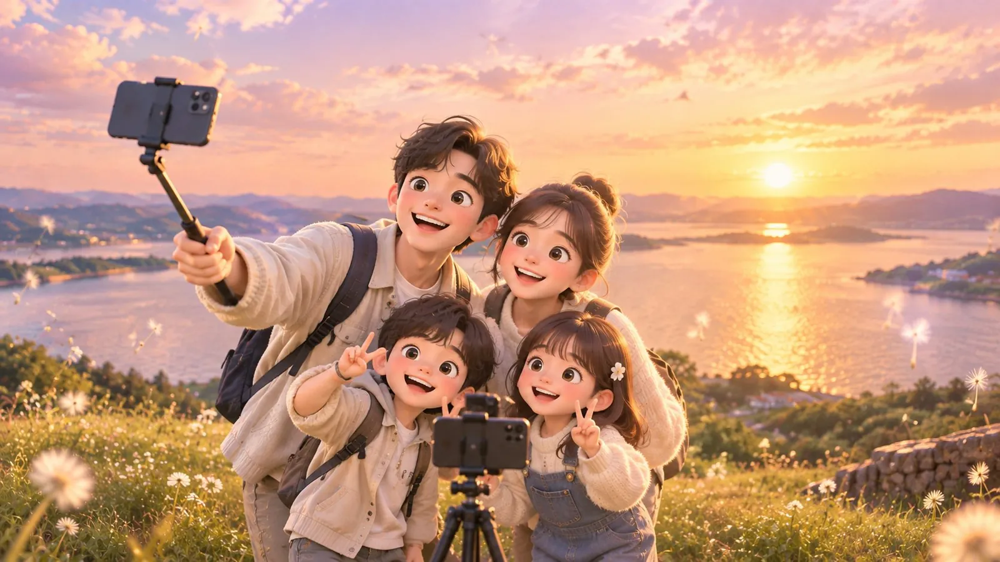

AI 영상 디렉터
숏폼·롱폼 영상 제작 도우미
주제만 입력하면 기획안, 컷별 콘티와 스케치 그림, 촬영 가이드, 편집 가이드를 차례로 만들어 주는 웹 서비스입니다. 콘티의 장면 번호가 촬영과 편집 단계까지 그대로 이어져 한 흐름으로 작업할 수 있습니다.
구현한 것
- 컷마다 샷 크기, 앵글, 카메라 무빙, 대사, 길이를 LLM이 JSON으로 정리하고 이미지 생성 AI가 컷별 콘티 그림을 그립니다.
- 편집 단계에서 컷 순서와 자막 문구를 안내하고 SRT 자막 파일을 내려받을 수 있게 했습니다.
- 인기 콘티 차트와 촬영 후기 기능을 붙이고 Render와 Supabase로 배포해 실제 사용자에게 공개했습니다.
- 시기
- 2026년 10–11월
- 형태
- 개인 프로젝트, 인공지능프로젝트 수업 생성형 AI 경진대회
- 도구
- React, Vite, FastAPI, OpenAI API, Supabase, Render